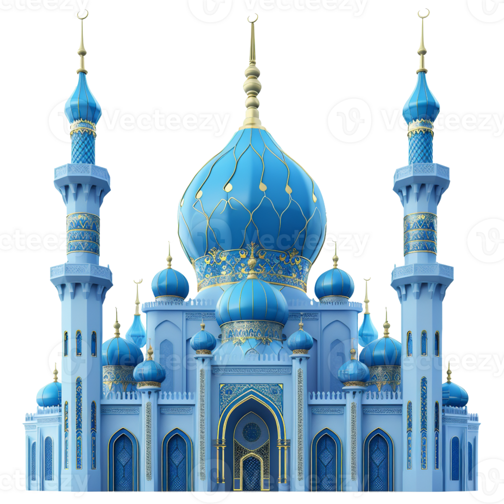

ADHKAR
Les rappels quotidiens qui illuminent ta journée
chargement...

Les rappels quotidiens qui illuminent ta journée
chargement...
N'est-ce pas par le rappel d'Allah que les cœurs se tranquillisent ?
Accueil
Favoris
Recherche
Paramètres
J'agrée Allah comme Seigneur, l'Islam comme religion et Muhammad ﷺ comme Prophète.
Gloire et louange à Allah du nombre de Ses créatures, de Sa propre Satisfaction, de la lourdeur de Son Trône et du nombre de Ses Paroles.
Au nom d'Allah, tel qu'en compagnie de Son Nom rien sur Terre ni au ciel ne peut nuire, Lui l'Audient, l'Omniscient.
Je me mets sous la protection des paroles parfaites d'Allah contre le mal qu'Il a créé.
Allah ! Point de divinité à part Lui, le Vivant, Celui qui n’a besoin de rien et dont toute chose dépend « al-Qayyûm ». Ni somnolence ni sommeil ne Le saisissent. À Lui appartient tout ce qui est dans les cieux et sur la Terre. Qui peut intercéder auprès de Lui sans Sa permission ? Il connaît leur passé et leur futur. Et, de Sa science, ils n’embrassent que ce qu’Il veut. Son Kursî (Piédestal) déborde les cieux et la Terre et leur garde ne Lui coûte aucune peine. Et Il est le Très Haut, l’Immense.
Dis : « Il est Allah, Unique ۞ Allah Le Seul à être imploré pour ce que nous désirons ۞ Il n’a jamais engendré et n’a pas été engendré non plus ۞ Et nul n’est égal à Lui. »
Dis : « Je cherche protection auprès du Seigneur de l’aube naissante ۞ contre le mal des êtres qu’Il a créés ۞ contre le mal de l’obscurité quand elle s’approfondit ۞ contre le mal de celles qui soufflent (les sorcières) sur les nœuds ۞ et contre le mal de l’envieux quand il envie. »
Dis : « Je cherche protection auprès du Seigneur des hommes ۞ Le Souverain des hommes ۞ Dieu des hommes ۞ contre le mal du mauvais conseiller, furtif ۞ qui souffle le mal dans les poitrines des hommes ۞ qu’il (le conseiller) soit un djinn, ou un être humain. »
« Ô Allah ! C’est par Toi que nous nous retrouvons au matin et c’est par Toi que nous nous retrouvons au soir. C’est par Toi que nous vivons et c’est par Toi que nous mourons et c’est vers Toi que se fera la Résurrection. »
« Ô Allah ! Tu es mon Seigneur. Il n’y a aucune divinité [digne d’être adorée] en dehors de Toi. Tu m’as créé et je suis Ton serviteur, je me conforme autant que je peux à mon engagement et à ma promesse vis-à-vis de Toi. Je cherche refuge auprès de Toi contre le mal que j’ai commis. Je reconnais Ton bienfait à mon égard et je reconnais mon péché. Pardonne-moi donc, en effet nul autre que Toi ne pardonnes les péchés. »
« Nous voilà au matin et le règne appartient à Allah. Louange à Allah, Il n’y a aucune divinité [digne d’être adorée] en dehors d’Allah, Seul, sans associé. À Lui la royauté, à Lui la louange et Il est capable de toute chose. Seigneur ! Je Te demande le bien que contient ce jour et le bien qui vient après. Et je cherche refuge auprès de Toi contre le mal que contient ce jour et le mal qui vient après. Seigneur ! Je cherche refuge auprès de Toi contre la paresse et les maux de la vieillesse. Je cherche refuge auprès de Toi contre le châtiment de l’Enfer et contre les tourments de la tombe. »
Ô Allah ! Je te demande le salut dans cette vie et dans l’au-delà. Ô Allah ! Je Te demande le pardon et le salut dans ma religion, ma vie, ma famille et mes biens. Ô Allah ! Cache mes défauts et mets-moi à l’abri de toutes mes craintes. Ô Allah ! Protège-moi par devant, par derrière, sur ma droite, sur ma gauche et au-dessus de moi. Je me mets sous la protection de Ta grandeur pour ne pas être enseveli.
Ô Allah ! Préserve mon corps. Ô Allah ! Préserve mon ouïe. Ô Allah ! Préserve ma vue. Il n’y a aucune divinité [digne d’être adorée] en dehors de Toi. Ô Allah ! Je cherche refuge auprès de Toi contre la mécréance et la pauvreté. Je me mets sous Ta protection contre les tourments de la tombe. Il n’y a aucune divinité [digne d’être adorée] en dehors de Toi.
Ô Allah ! Connaisseur de l’invisible et de l’apparent, Créateur des cieux et de la Terre, Seigneur et Possesseur de toute chose, j’atteste qu’il n’y a aucune divinité [digne d’être adorée] en dehors de Toi, je cherche refuge auprès de Toi contre le mal de mon âme, contre le mal de Satan et de son polythéisme et contre le fait de me faire du mal à moi-même ou d’en faire à un musulman
Nous voici au matin, en conformité avec la saine disposition qu’est l’Islam, avec la parole du monothéisme, avec la religion de notre Prophète Mohammed et sur la voie de notre père Ibrâhîm qui vouait un culte exclusif à Allah, soumis à Lui, et n’était point du nombre des polythéistes
Gloire, pureté et louange à Allah.
Il n’y a aucune divinité [digne d’être adorée] en dehors d’Allah, Seul, sans associé. À Lui la royauté, à Lui la louange, et Il est capable de toute chose
Je demande pardon à Allah, le Très Grand, Celui en dehors duquel il n’y a aucune divinité digne d’être adorée, Le Vivant, Celui qui subsiste par Lui-même, et je me repens à Lui.
Je demande pardon à Allah et je me repens à Lui.
J'agrée Allah comme Seigneur, l'Islam comme religion et Muhammad ﷺ comme Prophète.
Gloire et louange à Allah du nombre de Ses créatures, de Sa propre Satisfaction, de la lourdeur de Son Trône et du nombre de Ses Paroles.
Au nom d'Allah, tel qu'en compagnie de Son Nom rien sur Terre ni au ciel ne peut nuire, Lui l'Audient, l'Omniscient.
Je me mets sous la protection des paroles parfaites d'Allah contre le mal qu'Il a créé.
Allah ! Point de divinité à part Lui, le Vivant, Celui qui n’a besoin de rien et dont toute chose dépend « al-Qayyûm ». Ni somnolence ni sommeil ne Le saisissent. À Lui appartient tout ce qui est dans les cieux et sur la Terre. Qui peut intercéder auprès de Lui sans Sa permission ? Il connaît leur passé et leur futur. Et, de Sa science, ils n’embrassent que ce qu’Il veut. Son Kursî (Piédestal) déborde les cieux et la Terre et leur garde ne Lui coûte aucune peine. Et Il est le Très Haut, l’Immense.
Dis : « Il est Allah, Unique ۞ Allah Le Seul à être imploré pour ce que nous désirons ۞ Il n’a jamais engendré et n’a pas été engendré non plus ۞ Et nul n’est égal à Lui. »
Dis : « Je cherche protection auprès du Seigneur de l’aube naissante ۞ contre le mal des êtres qu’Il a créés ۞ contre le mal de l’obscurité quand elle s’approfondit ۞ contre le mal de celles qui soufflent (les sorcières) sur les nœuds ۞ et contre le mal de l’envieux quand il envie. »
Dis : « Je cherche protection auprès du Seigneur des hommes ۞ Le Souverain des hommes ۞ Dieu des hommes ۞ contre le mal du mauvais conseiller, furtif ۞ qui souffle le mal dans les poitrines des hommes ۞ qu’il (le conseiller) soit un djinn, ou un être humain. »
Ô Allah ! C’est par Toi que nous nous retrouvons au soir et c’est par Toi que nous nous retrouvons au matin. C’est par Toi que nous vivons et c’est par Toi que nous mourons et c’est vers Toi que sera notre destinée
« Ô Allah ! Tu es mon Seigneur. Il n’y a aucune divinité [digne d’être adorée] en dehors de Toi. Tu m’as créé et je suis Ton serviteur, je me conforme autant que je peux à mon engagement et à ma promesse vis-à-vis de Toi. Je cherche refuge auprès de Toi contre le mal que j’ai commis. Je reconnais Ton bienfait à mon égard et je reconnais mon péché. Pardonne-moi donc, en effet nul autre que Toi ne pardonnes les péchés. »
Nous voilà au soir et le règne appartient à Allah. Louange à Allah, Il n’y a aucune divinité [digne d’être adorée] en dehors d’Allah, Seul, sans associé. À Lui la royauté, à Lui la louange et Il est capable de toute chose. Seigneur ! Je Te demande le bien que contient cette nuit et le bien qui vient après. Et je cherche refuge auprès de Toi contre le mal que contient cette nuit et le mal qui vient après. Seigneur ! Je cherche refuge auprès de Toi contre la paresse et les maux de la vieillesse. Je cherche refuge auprès de Toi contre le châtiment de l’Enfer et contre les tourments de la tombe
Ô Allah ! Je te demande le salut dans cette vie et dans l’au-delà. Ô Allah ! Je Te demande le pardon et le salut dans ma religion, ma vie, ma famille et mes biens. Ô Allah ! Cache mes défauts et mets-moi à l’abri de toutes mes craintes. Ô Allah ! Protège-moi par devant, par derrière, sur ma droite, sur ma gauche et au-dessus de moi. Je me mets sous la protection de Ta grandeur pour ne pas être enseveli.
Ô Allah ! Préserve mon corps. Ô Allah ! Préserve mon ouïe. Ô Allah ! Préserve ma vue. Il n’y a aucune divinité [digne d’être adorée] en dehors de Toi. Ô Allah ! Je cherche refuge auprès de Toi contre la mécréance et la pauvreté. Je me mets sous Ta protection contre les tourments de la tombe. Il n’y a aucune divinité [digne d’être adorée] en dehors de Toi.
Ô Allah ! Connaisseur de l’invisible et de l’apparent, Créateur des cieux et de la Terre, Seigneur et Possesseur de toute chose, j’atteste qu’il n’y a aucune divinité [digne d’être adorée] en dehors de Toi, je cherche refuge auprès de Toi contre le mal de mon âme, contre le mal de Satan et de son polythéisme et contre le fait de me faire du mal à moi-même ou d’en faire à un musulman
Nous voilà au soir et la Royauté appartient à Allah, le Seigneur de l’Univers. Ô Allah ! Je Te demande le bien de cette nuit : ce qu’elle contient comme conquêtes, victoires, lumière, bénédiction et guidée. Je cherche refuge auprès de Toi contre le mal qu’elle contient et le mal qui vient après elle
Gloire, pureté et louange à Allah.
Il n’y a aucune divinité [digne d’être adorée] en dehors d’Allah, Seul, sans associé. À Lui la royauté, à Lui la louange, et Il est capable de toute chose
Je demande pardon à Allah, le Très Grand, Celui en dehors duquel il n’y a aucune divinité digne d’être adorée, Le Vivant, Celui qui subsiste par Lui-même, et je me repens à Lui.
Je demande pardon à Allah et je me repens à Lui.
Gloire et pureté à Allah
louange à Allah
Allah est le Plus Grand
Il n’y a aucune divinité [digne d’être adorée] en dehors d’Allah, Seul sans associé. À Lui la royauté et la louange, et Il est capable de toute chose. Il n’y a de force ni de puissance qu’en Allah, gloire et pureté à Allah, louange à Allah, il n’y a aucune divinité [digne d’être adorée] en dehors d’Allah et Allah est le plus Grand
Allah ! Point de divinité à part Lui, le Vivant, Celui qui n’a besoin de rien et dont toute chose dépend « al-Qayyûm ». Ni somnolence ni sommeil ne Le saisissent. À Lui appartient tout ce qui est dans les cieux et sur la Terre. Qui peut intercéder auprès de Lui sans Sa permission ? Il connaît leur passé et leur futur. Et, de Sa science, ils n’embrassent que ce qu’Il veut. Son Kursî (Piédestal) déborde les cieux et la Terre et leur garde ne Lui coûte aucune peine. Et Il est le Très Haut, l’Immense.
Dis : « Il est Allah, Unique ۞ Allah Le Seul à être imploré pour ce que nous désirons ۞ Il n’a jamais engendré et n’a pas été engendré non plus ۞ Et nul n’est égal à Lui. »
Dis : « Je cherche protection auprès du Seigneur de l’aube naissante ۞ contre le mal des êtres qu’Il a créés ۞ contre le mal de l’obscurité quand elle s’approfondit ۞ contre le mal de celles qui soufflent (les sorcières) sur les nœuds ۞ et contre le mal de l’envieux quand il envie. »
Dis : « Je cherche protection auprès du Seigneur des hommes ۞ Le Souverain des hommes ۞ Dieu des hommes ۞ contre le mal du mauvais conseiller, furtif ۞ qui souffle le mal dans les poitrines des hommes ۞ qu’il (le conseiller) soit un djinn, ou un être humain. »
C’est en Ton nom, Seigneur que je me couche, et en Ton nom que je me lève. Si Tu retiens mon âme, alors fais-lui miséricorde ; et si Tu la renvoies [dans mon corps], protège-la donc de la manière dont Tu protèges Tes pieux serviteurs.
Louange à Allah qui nous a rendus à la vie après nous avoir fait mourir, et tout retourne à Lui.
Il n’y a d’autre divinité qu’Allâh l’Unique sans associé, à Lui la royauté et à Lui la louange et Il est capable de toute chose. Gloire et pureté à Allâh, la louange est à Allâh et il n’y a de puissance ni de force qu’en Allâh le Très-Haut, le Plus Grand. Ô Seigneur pardonne-moi.
Louange à Allah qui m’a rendu la vie, m’a préservé dans ma santé et m’a permis de Le mentionner.